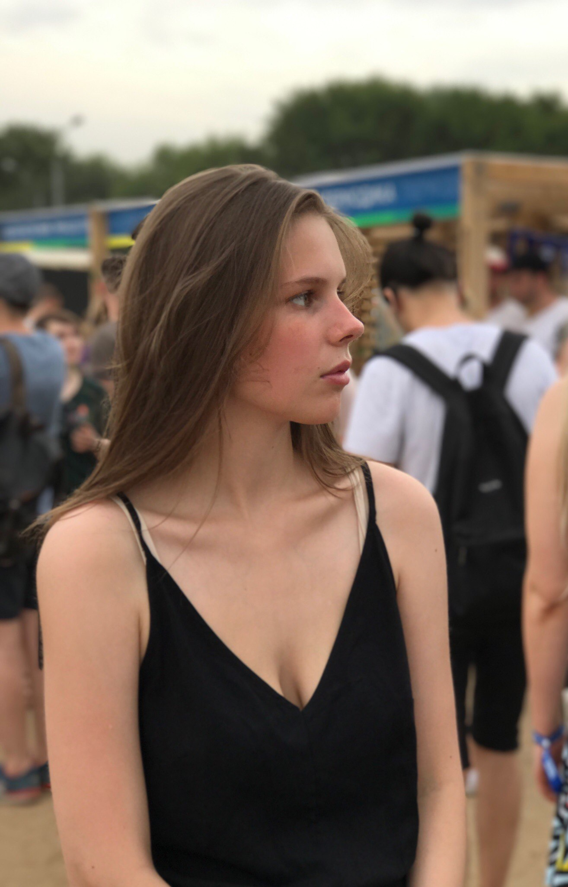

Осипова Василиса
О себе:

Возраст: 17 лет
Дата рождения: 29 августа 2000 года
Образование:НИУ ВШЭ "Фундаментальная и компьютерная лингвистика"
Внешность:
- Рост: 173 см
- Цвет волос: русые
- Цвет глаз: зелёные
Увлечения:
- Любимый цвет: черный
- Любимый спорт: сноубординг
Семья:
- Родители: Татьяна и Егор
- Братья и сестры: сестра Маша (14 лет) и брат Ваня (5 лет)